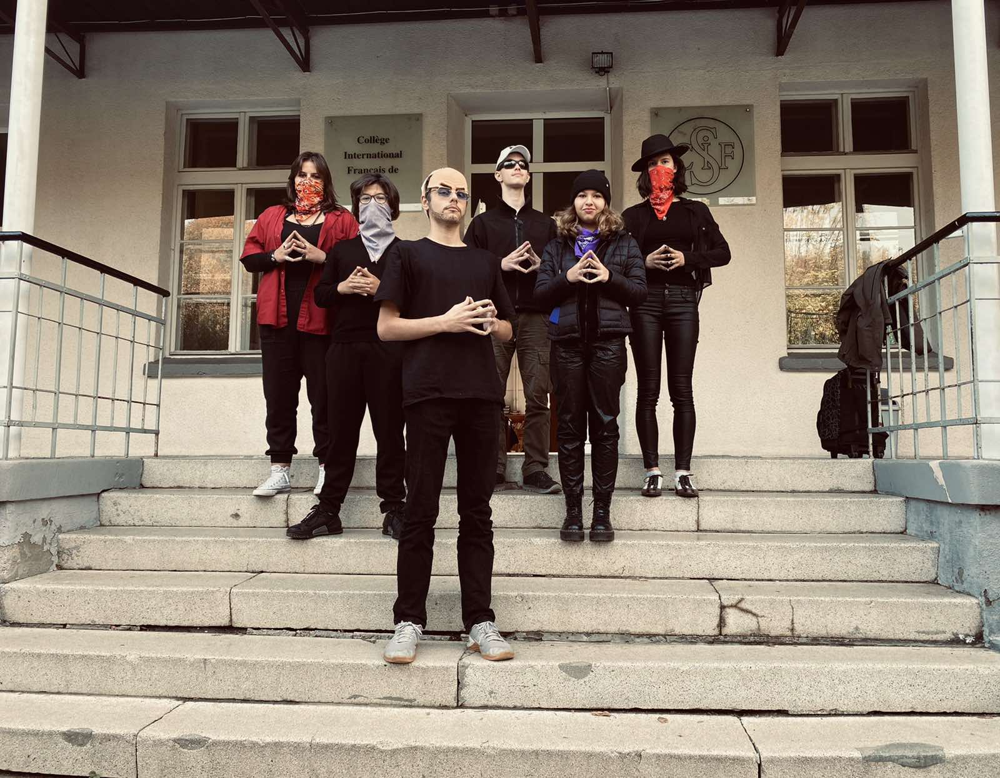
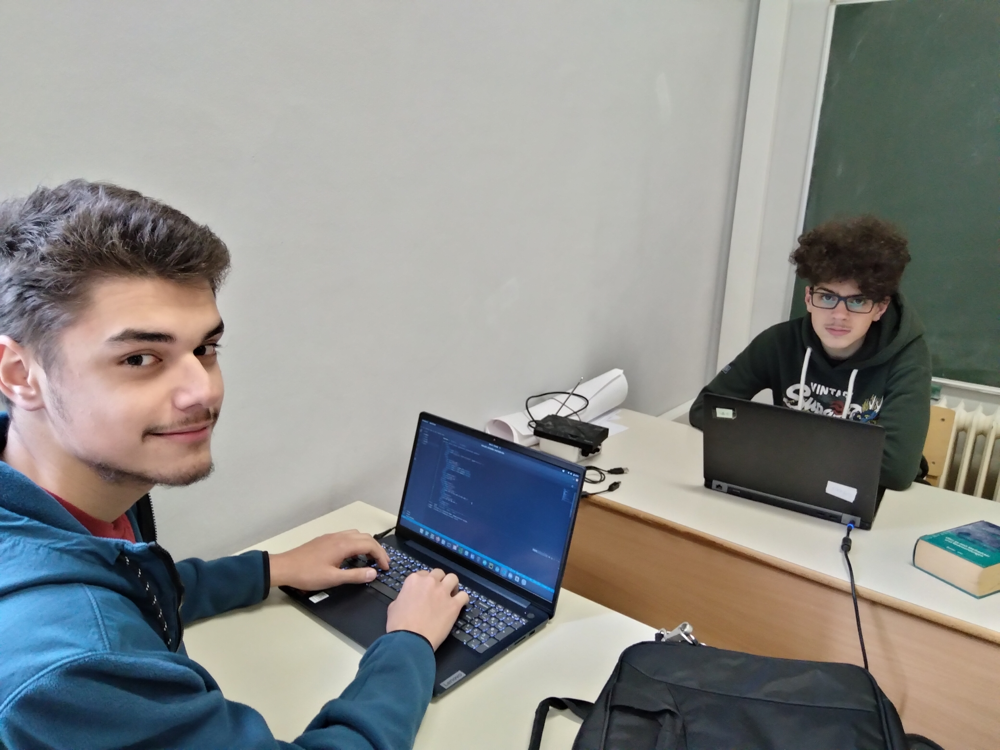

Journeé Halloween!


En SNT!
Ce site Web a été cree par les élèves du Cifs!
Ce site a été créé en HTML, CSS et JAVASCRIPT.
Ce site contient des informations sur quelques matieres(SVT, Francais ect...)
Les élèves de Cifs sont des débutants en HTML, CSS et JAVASCRIPT. Ce site, dirigé par Ali Mansouri, montre les connaissances apprises!
Les sciences numeriques
La SNT!
En cours de SNT avec Mme Natalia Pusic
Themes étudiés en SNT:
-Internet
-Les Réseaux sociaux
-Les données sructurées
- Localisation , cartographie et mobilité
- Informatique embarquée et objets connectés